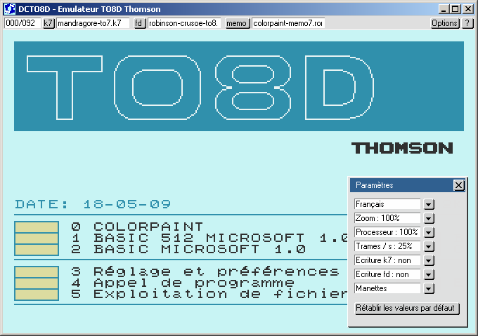
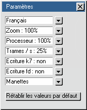
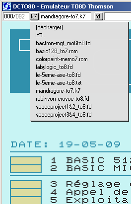
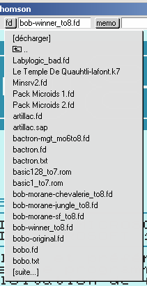
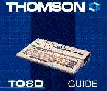

DCTO8D 2009 : Thomson TO8D emulator
DCTO8D 2009 is a Thomson TO8D emulator, created by Daniel Coulom (mail to danielcoulom at gmail dot com).
DCTO8D website is dcto8.free.fr.


Photo © 2007 - Daniel Coulom
Functions
DCTO8D 2009 emulates :
- Central Processor Unit with the Motorola MC6809E microprocessor.
- System monitor and the two built-in Basic interpreters.
- Keyboard, display and lightpen.
- Two joysticks and the mouse.
- MK97-070 tape unit.
- 3"1/2 floppy disk unit.
- MEMO7 rom cartridges.
- Parallel printer (with a file).
DCTO8D user interface comes with two languages : English and French.
Technical tips
DCTO8D is a 'free software'.
- It is distributed under the terms of the GNU GPL (more in the official licence)
- It is programmed with the C language
- It uses SDL library for audio and video.
- User interface has been designed specially for this project.
- It doesn't use hardware specific or system specific function, to allow easy port.
- It can run with Windows, Linux, Mac-OS and many other systems.
History
- 2009-05-20 : DCTO8D 2009.05 released
- 2006-12-10 : DCTO8D v10 released
Installation
DCTO8D 2009 should run on every PC with a Pentium II or better processor, an audio adapter and a decent video adapter.
It is compatible with Linux, Windows and every operating system compatible with SDL. It also runs on other platforms.
The list of compatible systems will be added here, depending on the user's feedback.


All platforms
- Create a new folder and name it dcto9d (or any other name you like).
- Download dcto8d.2009.05.zip to this folder.
- Unpack the archive, keeping the directory structure.
- Put tape images (.k7 extension), disk images (.fd extension) and MEMO7 cartridge images (.rom extension) in a subfolder.
TO8D software can be downloaded from dcmoto collection.
Linux
- Install SDL library.
- Compile dcto8d 2009
- Run the program
Windows
- SDL.dll and dcto8d.exe came with the zip archive. Just double-click on dcto8d.exe.
- You can make a shortcut and put it on the desktop or in the task bar.
Other operating system
User Guide
Emulator commands
All emulator commands are done through menu bar at the top of the program main window.

- About DCTO8D
Click [?] button on the right of the menu bar.

- Settings
Click [Options] button on the right of the menu bar, and select Settings...
The buttons on the right of each parameter can be used to change the value.
[Restore default values] button initializes all the values.
Increasing the number of frames per second dramatically increases resource usage.
With a slow computer, when audio output is poor, you need to decrease frames/s until you get good sound.

- Keyboard layout
Click [Options] button on the right of the menu bar, and select Keyboard...
Key codes depend on operating system and keyboard type. It is not possible to recognize every configuration.
Default in dcto8d is a standard French keyboard with Windows XP or Linux. For other configurations the keyboard layout must be redefined.
It is a straightforward process : each TO8D key is emulated with one key of the actual keyboard.
Type a key on the keyboard. Matching TO8D key is shown. If not correct, click the corresponding TO8D key picture.
Repeat this process for each of the 84 TO8D keys. Then you should save the customized keyboard layout, and it will be used each time you will run DCTO8D.

- Joystick emulation
Click [Options] button on the right of the menu bar, and select Joysticks...
Joysticks are emulated with the numeric keypad. For each joystick, four keys have to be choosen for directions and one for fire.
Process is exactly the same as for keyboard layout. Please note that the same key can be used for both TO8D keyboard and TO8D joystick emulation.
Make your choice to avoid mix-up when running a program testing both keyboard and joysticks.

- Load tape, disk or MEMO7 cartridge
Click [k7], or [fd], or [memo] button in the status bar.
A popup menu shows a list of folders and files.
You can click [unload] to unload currently loaded file,
or [next...] or [back to first...] when these lines are displayed.
You can browse folders by clicking lines with a folder icon at the beginning.
Finally you can click a file name to load a k7, disk or cartridge image.
Be sure it is a correct image file, compatible with the TO8D.



TO8D commands
Look at the 'TO8D Guide' (in French), at dcmoto Documentation page.

TO8D game and program commands
Download user guides at dcmoto Programmes page.
{kind=link}
{kind=link}
{kind=link}
{kind=link}
{kind=link}